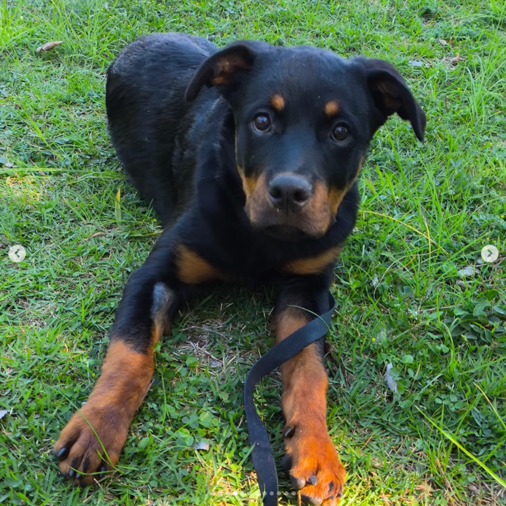
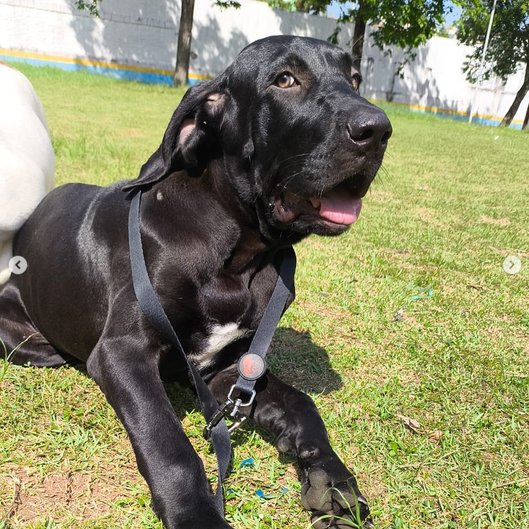
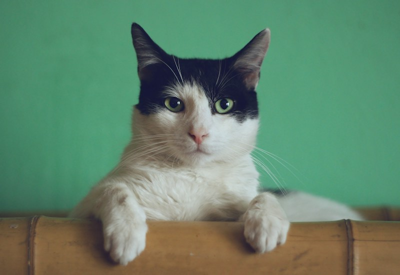

Rufus
Rufus foi encontrado em situação de abandono e recebeu atendimento e os cuidados necessários após o resgate.
Ver fichaAcompanhe os registros de animais resgatados por protetores independentes, facilitando o controle e o cuidado durante todo o processo de resgate.
Os animais apresentados na plataforma são resgatados e cuidados por seus respectivos protetores independentes, que são responsáveis pelo acompanhamento e pelos cuidados necessários.
A plataforma tem como objetivo organizar os registros dos resgates e facilitar a divulgação e a conexão entre protetores e pessoas interessadas em ajudar ou adotar.
Conheça alguns dos animais que foram resgatados e receberam cuidados por meio do trabalho dos protetores.

Rufus foi encontrado em situação de abandono e recebeu atendimento e os cuidados necessários após o resgate.
Ver ficha
Hayley foi encontrada em condições de vulnerabilidade e encaminhada para receber cuidados e acompanhamento.
Ver ficha
Luna foi resgatada por um protetor independente e passou a receber os cuidados necessários para sua recuperação.
Ver fichaRegistre as informações do animal resgatado para manter todos os dados organizados e facilitar o acompanhamento do resgate.
Na página de cadastro, serão solicitados dados do protetor, informações do animal, data e local do resgate, situação encontrada, descrição e uma foto.